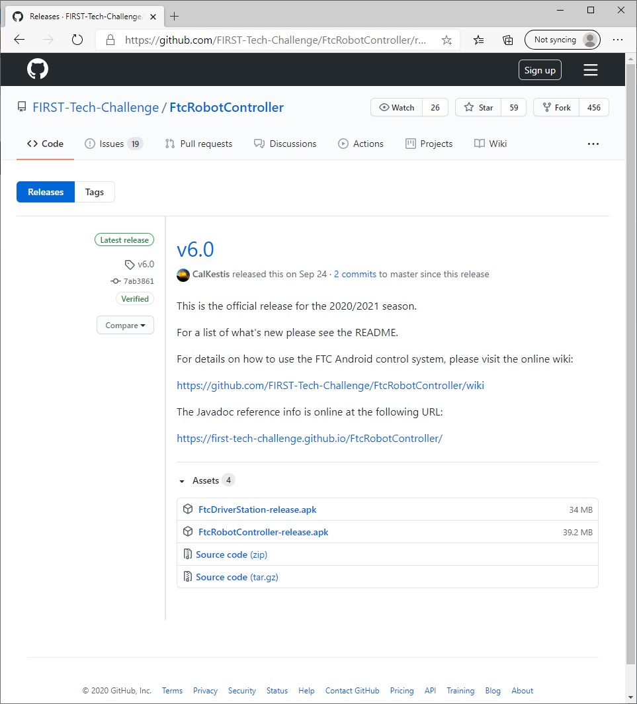
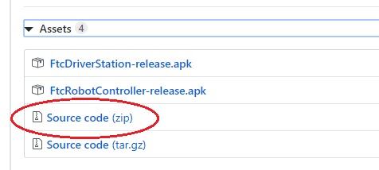
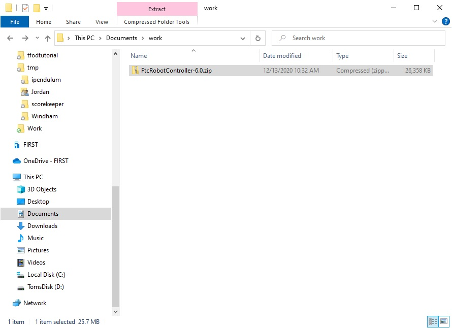
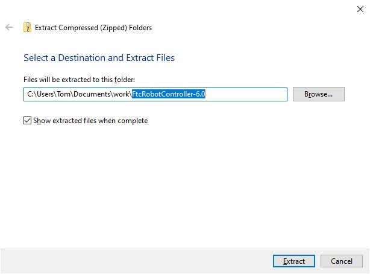
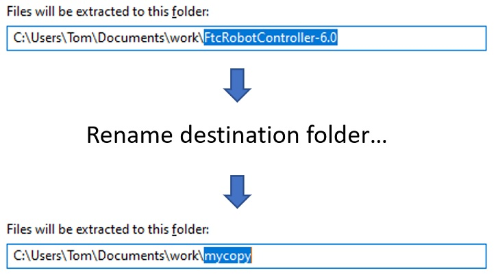
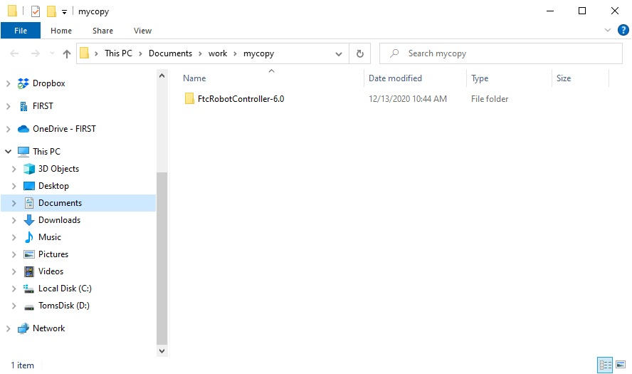
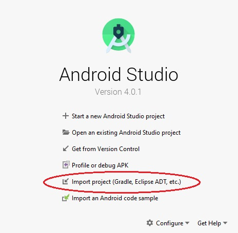
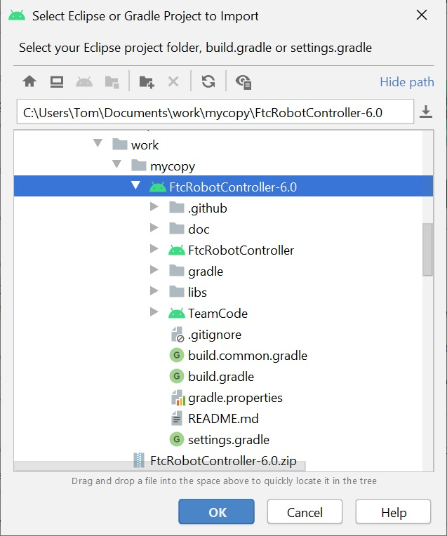
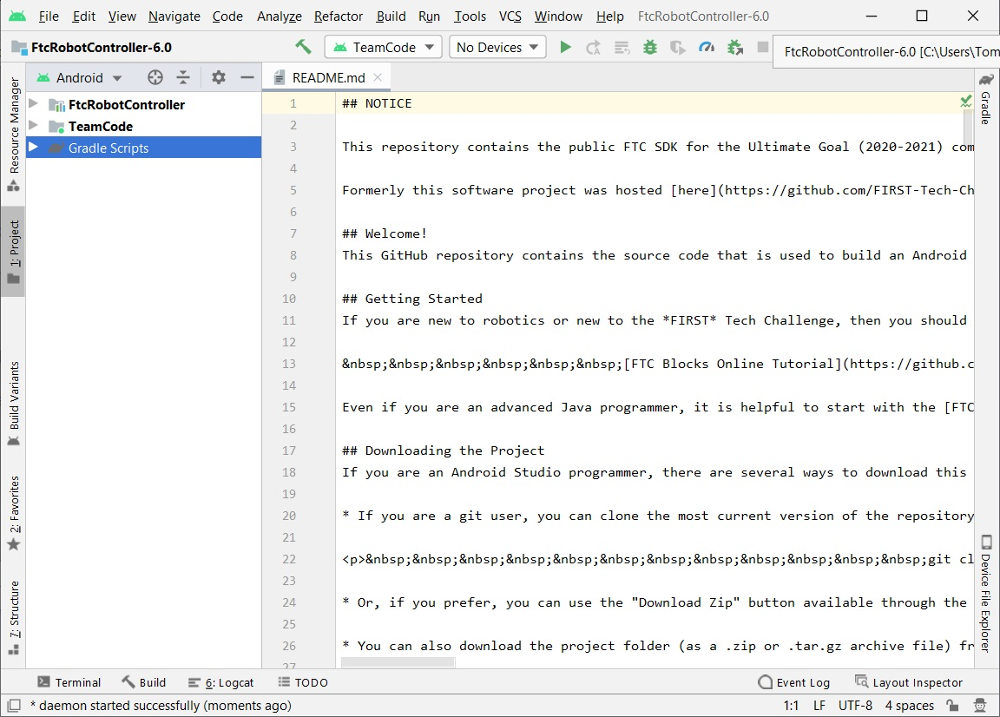

Downloading the Android Studio Project Folder AS Legacy
The SDK can be downloaded from a GitHub repository. GitHub is a web-based version control company that lets individuals and organizations host content online. In order to access the Android Studio software, you will need to have a GitHub account. You can create one for free by visiting the GitHub website:
The software is stored in a repository called “FtcRobotController” under the FIRST-Tech-Challenge GitHub organization:
Important
Advanced GitHub Users - this tutorial assumes that the user is a novice with respect to using GitHub and the git version control software. If you are a GitHub power user, you can use git to clone a local copy of the public GitHub repository. This document, however, does not explain how to use git to access the repository. It provides instructions on downloading the repository as a .ZIP file instead.
From the main repository web page, click on the “releases” link to jump to the Releases page for the repository. The Releases page should list the available software releases for the repository. The latest release should be displayed near the top of the page.
Each software release should include an Assets section that you can use to download the software that you will need to program your robot. Note that you might have to click on the triangular symbol to expand this Assets section.
Click on the Source code (zip) link to download the compressed Android Studio project folder.
Extracting the Contents of the Archived Project File
Once you have downloaded the archived (.ZIP) project file you can move this file to the location of your choice.
Before you can import the project into Android Studio, you must first extract the contents of the archived project file. For Windows users, right mouse click on the file and select “Extract All” from the pop up menu. Windows should prompt you to select a destination for the extracted project folder. The dialog that appears should look similar to the one show in the figure below.
Highlight the suggested name for the destination folder (in the figure above, the suggested name is “FtcRobotController-6.0”) and change the destination folder name into something more user friendly. In this example, we will change the name of the destination folder to “mycopy”.
After you have renamed the destination folder, extract the contents of the archive to the folder. After the extraction process is complete, verify that the project folder was successfully extracted to its target destination.
Once you have successfully extracted the contents of the archived file, you are ready to import the project into Android Studio.
Importing the Project into Android Studio
In order to import the Project, you will need to launch the Android Studio software on your computer. On the main Android Studio Welcome screen, select the option to “Import project (Gradle, Eclipse, ADT, etc.)” to begin the import process.
Android Studio should prompt you to select the project folder that you would like to import. Use the file browser in the pop up dialog box to locate and then select the folder that you extracted in an earlier section of this document. Make sure you select the extracted project folder (and not the .ZIP file which might have a similar name to the extracted folder). Hit the “OK” button to import the selected project into Android Studio.
In the figure above the project folder called “FtcRobotController-6.0” is selected to be imported into Android Studio. It might take Android Studio several minutes to import the project. Once the project has been successfully imported, the screen should look similar to the one depicted in the image below.
